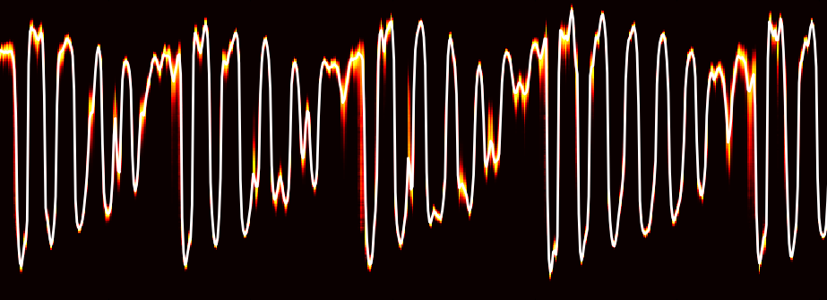

Parallel WaveNet: Fast High-Fidelity Speech Synthesis
Aäron van den Oord, Yazhe Li, Igor Babuschkin, Karen Simonyan, Oriol Vinyals, Koray Kavukcuoglu, George van den Driessche, Edward Lockhart, Luis C. Cobo, Florian Stimberg, Norman Casagrande, Dominik Grewe, Seb Noury, Sander Dieleman, Erich Elsen, Nal Kalchbrenner, Heiga Zen, Alex Graves, Helen King, Tom Walters, Dan Belov, Demis Hassabis
Blogpost
Arxiv
Neural Discrete Representation Learning
Aäron van den Oord, Oriol Vinyals, Koray Kavukcuoglu
Slides from SANE 2017 talk
Samples
Arxiv
 WaveNet: A Generative Model for Raw Audio
Aäron van den Oord, Sander Dieleman, Heiga Zen, Karen Simonyan, Oriol Vinyals, Alex Graves, Nal Kalchbrenner, Andrew Senior, Koray Kavukcuoglu
Blogpost
Arxiv
Conditional Image Generation with PixelCNN Decoders
Aäron van den Oord, Nal Kalchbrenner, Oriol Vinyals, Lasse Espeholt, Alex Graves, Koray Kavukcuoglu
Arxiv
Pixel Recurrent Neural Networks
Aäron van den Oord, Nal Kalchbrenner, Koray Kavukcuoglu
Best paper award at ICML 2016
Arxiv
A note on the evaluation of generative models
Lucas Theis*, Aäron van den Oord*, Matthias Bethge
Arxiv
Deep Content-Based Music Recommendation
Aäron van den Oord, Sander Dieleman, Benjamin Schrauwen
Factoring variations in natural images with deep Gaussian mixture models
Aäron van den Oord, Benjamin Schrauwen
The student-t mixture as a natural image patch prior with application to image compression
Aäron van den Oord, Benjamin Schrauwen
Based in London, I am an artificial intelligence researcher at Google DeepMind. I am passionate about deep learning with a strong focus on generative models, such as PixelCNNs and WaveNets. During my PhD at Ghent University I also worked on image compression and music recommendation - the latter got me an internship at Google Play Music.